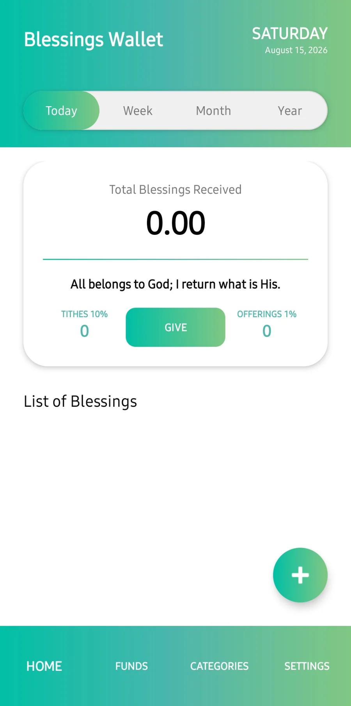
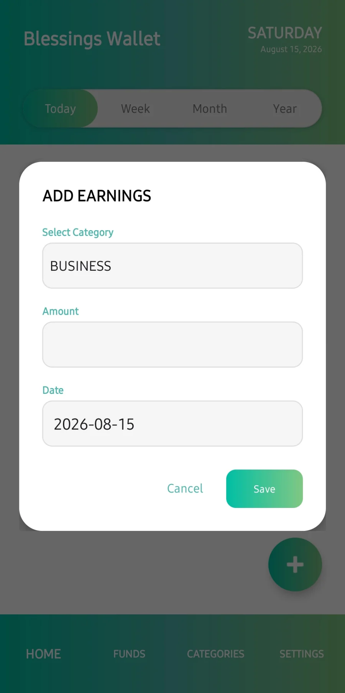
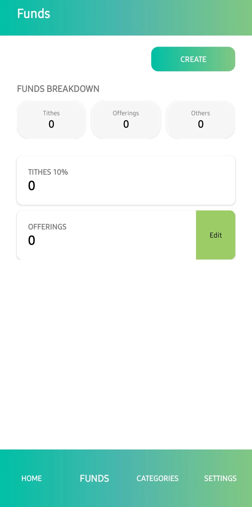
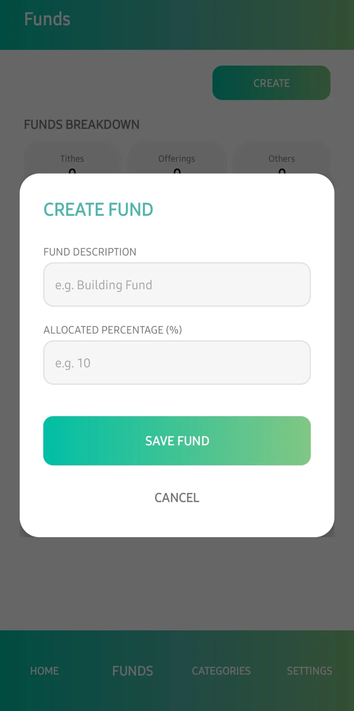
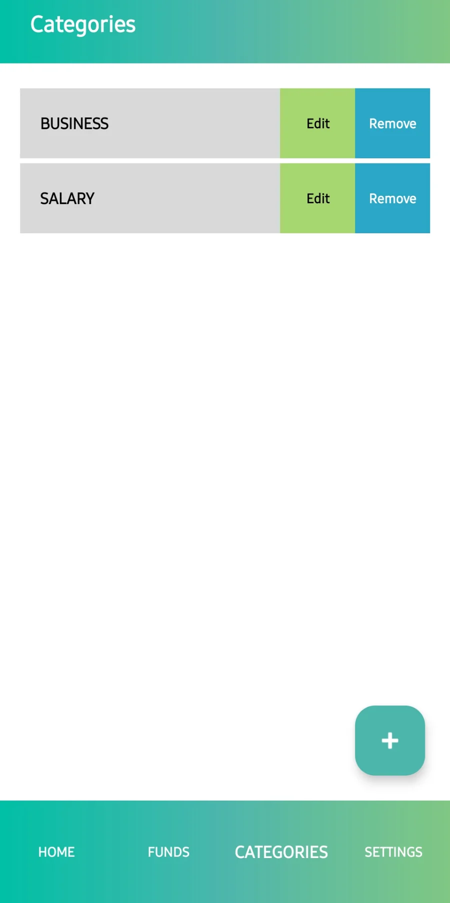
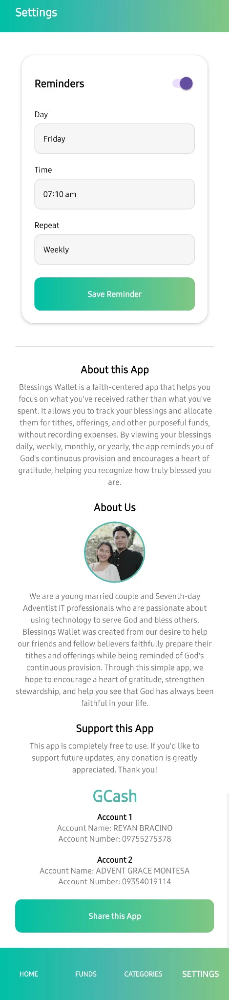

Record Blessings
Add salary, business income, gifts, bonuses, and other financial blessings manually.
Blessings Wallet is a simple faith-centered app that helps you record what you receive, prepare tithes, offerings, and intentional funds, and reflect on God's provision over time— without tracking your expenses.
Offline-first • No account required • No bank connection • No ads
The app is intentionally different from a traditional budget tracker. It helps you remember what you have received and what you have intentionally set aside.
Add salary, business income, gifts, bonuses, and other financial blessings manually.
See intended amounts automatically using the stewardship percentages you configure.
Set aside portions for mission, building, savings, family needs, or other meaningful purposes.
Review blessings for today, the week, month, or year and see God's provision more clearly.
Choose a reminder day and time to review your blessings and prepare your intended giving.
Your stewardship records are designed to stay on your device. No online account is required.
A straightforward gallery of the main Blessings Wallet screens.






Blessings Wallet keeps the flow intentionally simple.
Blessings Wallet does not hold, send, receive, or transfer real money. It does not connect to banks or electronic wallets and does not track everyday expenses.
Blessings Wallet is a faith-centered app that helps you focus on what you've received rather than what you've spent. It lets you track blessings and allocate them for tithes, offerings, and other purposeful funds. By reviewing your blessings daily, weekly, monthly, or yearly, the app encourages gratitude and helps you recognize God's continuing provision.
We are a young married couple and Seventh-day Adventist IT professionals who are passionate about using technology to serve God and bless others. Blessings Wallet grew from our desire to help friends and fellow believers prepare their tithes and offerings while remembering God's faithfulness and provision.
Independent project: Blessings Wallet is independently developed and is not an official application of the Seventh-day Adventist Church or its affiliated organizations.
“Every blessing counted is a reminder of God's provision.” Blessings Wallet
Review each document independently before using or distributing Blessings Wallet.
Download the Android APK from the project's latest GitHub release. A Google Play listing can be connected here when the app is published.